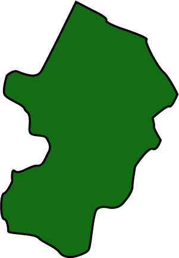
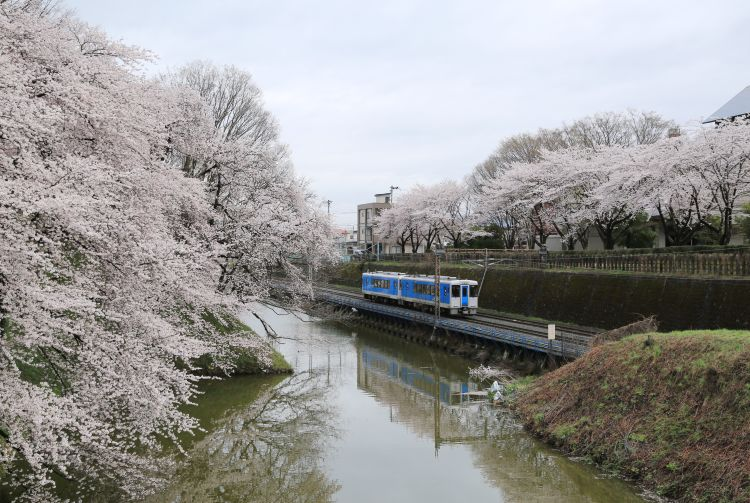
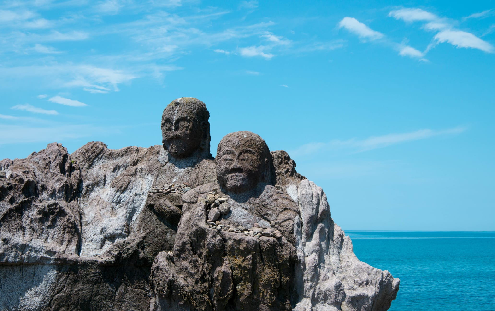

Enclosed by the Sea of Japan to the west and mountains to the east, Yamagata Prefecture is defined by its nature. Along the coast sit the port cities of Tsuruoka and Sakata, while deep inland is Zao Onsen, an area home to hot springs, sparsely visited ski slopes, and spectacular snow-covered trees referred to as "snow monsters." Mountain temple Yamadera is the subject of one of the most famous haiku poems, and Ginzan Onsen is a picturesque hot spring resort town on the site of a former silver mine. (Source: Yamagata Official Tourism Site)
Prefecture Image
Yamagata Castle
Explore Yamagata
Juroku Rakan Iwa
